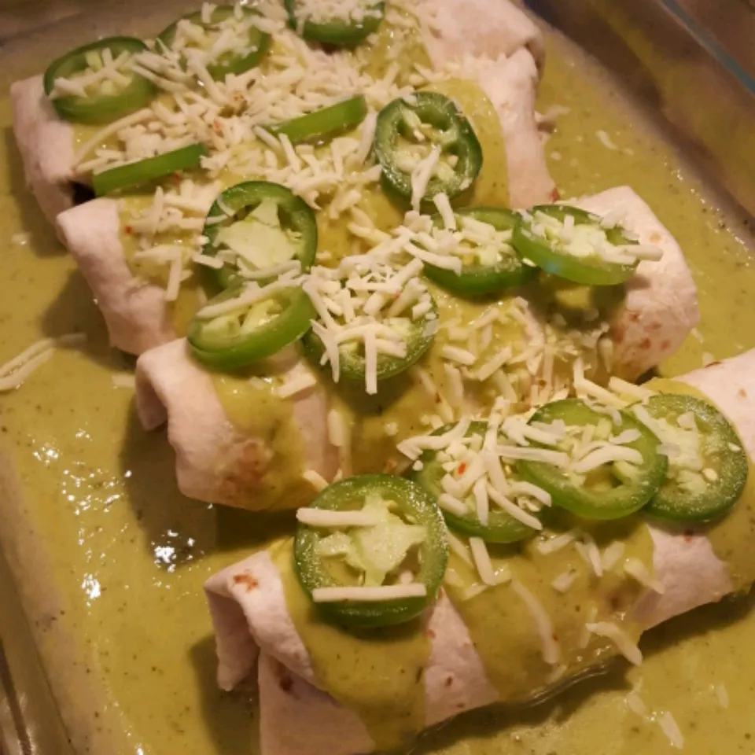

Chicken Enchiladas

jalapeno Cream Cheese Chicken Enchiladas
One of my favorite local Mexican restaurants serves a dish with jalapeno cream cheese and shredded chicken that is to die for.I had been experimenting with dishes that contained those two ingredients and came up with this!!It is absolutely to die for and I get nothing but rave reviews from people who try it!
Give it a whirl... I promise your taste buds won't regret it. :-)
Ingredients
- 3 skinless, boneless chicken breast halves
- 1 teaspoon cayenne pepper
- ½ teaspoon garlic powder
- salt and ground black pepper to taste
- 2 tablespoons butter
- 1 large onion, minced
- 2 jalapeno peppers, seeded and minced (wear gloves)
- 1 (8 ounce) package cream cheese
- 1 tablespoon garlic powder
- ½ teaspoon cayenne pepper
- ½ teaspoon paprika
- ½ teaspoon chili powder
- ½ teaspoon ground cumin
- 1 (28 ounce) can green enchilada sauce
- 7 flour tortillas
- 8 ounces shredded Monterey Jack cheese, divided
Directions
- 1. Preheat oven to 350 degrees F (175 degrees C).
- 2. Season chicken breasts with 1 teaspoon of cayenne pepper, 1/2 teaspoon of garlic powder, salt, and black pepper. Place into a baking dish.
- 3. Bake in the preheated oven until the chicken is no longer pink inside and the juices run clear, about 45 minutes. Allow chicken to cool, and shred with 2 forks. Set chicken aside.
- 4. Heat butter in a large nonstick skillet over medium heat, and cook the onion and jalapenos until the onion is translucent, about 5 minutes; stir in the cream cheese in chunks, and allow cream cheese to melt and soften. Stir in cream cheese, garlic powder, cayenne pepper, paprika, chili powder, and cumin. Mix in the cooked chicken meat; remove from heat.
- 5. Pour half the green enchilada sauce into the bottom of a 9x13-inch baking dish. Lay tortillas out onto a work surface, and place chicken mixture in a line down the center of each tortilla; sprinkle with about 1 tablespoon of Monterey Jack cheese per tortilla. Roll up the tortillas, and place into the sauce in the dish, seam sides down; pour the remaining sauce over the enchiladas. Sprinkle remaining 4 ounces of Monterey Jack cheese over the top.
- 6. Bake in the preheated oven until the filling is hot and bubbling and the cheese has melted, 30 to 35 minutes.